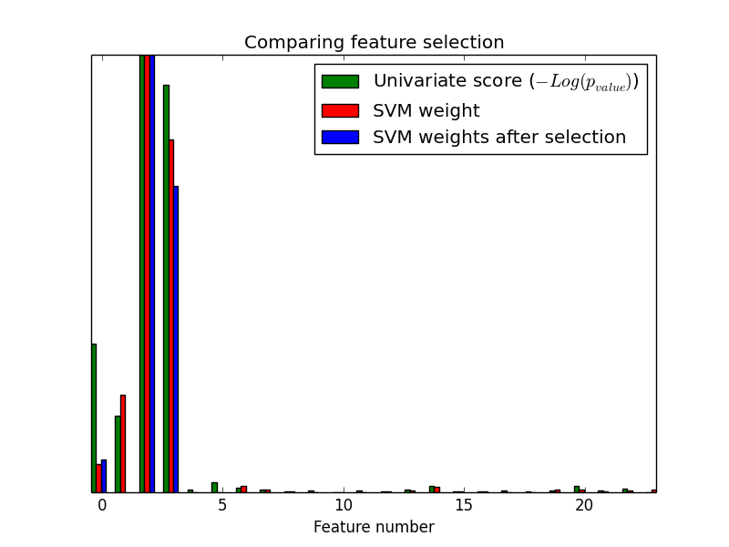

Univariate Feature Selection¶
An example showing univariate feature selection.
Noisy (non informative) features are added to the iris data and univariate feature selection is applied. For each feature, we plot the p-values for the univariate feature selection and the corresponding weights of an SVM. We can see that univariate feature selection selects the informative features and that these have larger SVM weights.
In the total set of features, only the 4 first ones are significant. We can see that they have the highest score with univariate feature selection. The SVM assigns a large weight to one of these features, but also Selects many of the non-informative features. Applying univariate feature selection before the SVM increases the SVM weight attributed to the significant features, and will thus improve classification.
Python source code: plot_feature_selection.py
print(__doc__)
import numpy as np
import pylab as pl
from sklearn import datasets, svm
from sklearn.feature_selection import SelectPercentile, f_classif
###############################################################################
# import some data to play with
# The iris dataset
iris = datasets.load_iris()
# Some noisy data not correlated
E = np.random.uniform(0, 0.1, size=(len(iris.data), 20))
# Add the noisy data to the informative features
X = np.hstack((iris.data, E))
y = iris.target
###############################################################################
pl.figure(1)
pl.clf()
X_indices = np.arange(X.shape[-1])
###############################################################################
# Univariate feature selection with F-test for feature scoring
# We use the default selection function: the 10% most significant features
selector = SelectPercentile(f_classif, percentile=10)
selector.fit(X, y)
scores = -np.log10(selector.pvalues_)
scores /= scores.max()
pl.bar(X_indices - .45, scores, width=.2,
label=r'Univariate score ($-Log(p_{value})$)', color='g')
###############################################################################
# Compare to the weights of an SVM
clf = svm.SVC(kernel='linear')
clf.fit(X, y)
svm_weights = (clf.coef_ ** 2).sum(axis=0)
svm_weights /= svm_weights.max()
pl.bar(X_indices - .25, svm_weights, width=.2, label='SVM weight', color='r')
clf_selected = svm.SVC(kernel='linear')
clf_selected.fit(selector.transform(X), y)
svm_weights_selected = (clf_selected.coef_ ** 2).sum(axis=0)
svm_weights_selected /= svm_weights_selected.max()
pl.bar(X_indices[selector.get_support()] - .05, svm_weights_selected, width=.2,
label='SVM weights after selection', color='b')
pl.title("Comparing feature selection")
pl.xlabel('Feature number')
pl.yticks(())
pl.axis('tight')
pl.legend(loc='upper right')
pl.show()
Total running time of the example: 0.13 seconds ( 0 minutes 0.13 seconds)